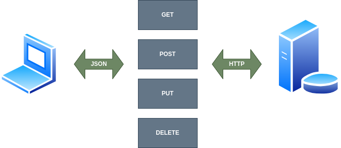

APIS Rest#
Las API REST, que significa “Interfaz de Programación de Aplicaciones basada en Transferencia de Estado Representacional” en inglés, constituyen un enfoque arquitectónico para el desarrollo de servicios web que ha ganado amplia aceptación en la industria de la tecnología. Estas API ofrecen una forma estándar y eficiente para que diferentes sistemas se comuniquen entre sí a través de la web.
En esencia, una API REST se basa en los principios del protocolo HTTP (Hypertext Transfer Protocol) y utiliza métodos estándar como GET, POST, PUT y DELETE para realizar operaciones sobre recursos. La comunicación entre el cliente y el servidor se lleva a cabo mediante solicitudes y respuestas, donde la representación del estado de un recurso se transfiere de manera uniforme, generalmente en formato JSON o XML.
{kind=link}
Este enfoque ligero y flexible facilita la construcción de aplicaciones escalables y modularmente diseñadas. Las API REST han ganado popularidad gracias a su simplicidad, facilidad de uso y su capacidad para admitir la integración sin problemas entre sistemas heterogéneos. En la actualidad, son fundamentales para el desarrollo de aplicaciones modernas, ya que permiten la interconexión y la interoperabilidad de manera eficiente en el vasto paisaje digital.
Métodos de una API Rest#
Las API REST utilizan varios métodos HTTP estándar para realizar operaciones en recursos. Aquí hay una descripción breve de los métodos más comunes:
| MÉTODOS DE UNA API REST | |||
|---|---|---|---|
| GET | Se utiliza para recuperar información de un recurso en el servidor. Por ejemplo, al realizar una solicitud GET a la URL de un recurso, se obtiene una representación de ese recurso. | ||
| POST | Se emplea para enviar datos al servidor para crear un nuevo recurso. La información enviada con una solicitud POST generalmente se utiliza para actualizar o crear un recurso en el servidor. | ||
| PUT | Se utiliza para actualizar un recurso en el servidor. Al enviar una solicitud PUT a la URL de un recurso, se reemplaza completamente con la información proporcionada en la solicitud. | DELETE | Se utiliza para eliminar un recurso en el servidor. Al enviar una solicitud DELETE a la URL de un recurso, se solicita la eliminación de ese recurso. |
| PATCH | Similar a PUT, pero se utiliza para realizar actualizaciones parciales en un recurso. En lugar de reemplazar completamente el recurso, PATCH aplica cambios específicos. | ||
| OPTIONS | Se utiliza para obtener información sobre las opciones y requisitos asociados con un recurso, o la comunicación con el servidor en general. | ||
| HEAD | Similar a GET, pero solicita solo los encabezados de la respuesta, sin el cuerpo de la respuesta. Se utiliza para obtener información sobre un recurso sin recuperar toda su representación. | ||
Principio de idempotencia#
La idempotencia es un principio fundamental en el diseño de API REST que establece que realizar una operación varias veces debe tener el mismo efecto que realizarla una sola vez. En otras palabras, si una solicitud es idempotente, su resultado no cambia, independientemente de cuántas veces se realice.
En el contexto de una API REST, esto significa que, al realizar una solicitud HTTP idempotente, el estado del sistema no se ve afectado por solicitudes duplicadas. Este principio proporciona beneficios importantes en términos de robustez, confiabilidad y facilidad de manejo de errores, especialmente en entornos donde las comunicaciones pueden ser propensas a interrupciones o errores de red.
Algunos de los métodos HTTP comunes que son idempotentes incluyen:
GET: Obtener información no debería tener efectos secundarios, por lo que es inherentemente idempotente. Hacer múltiples solicitudes GET al mismo recurso no debería cambiar su estado.
PUT: Actualizar un recurso con PUT debería ser idempotente. Si se realiza la misma solicitud PUT varias veces, el resultado debería ser el mismo que si se realiza una sola vez.
DELETE: Eliminar un recurso también debería ser idempotente. Si se intenta eliminar un recurso que ya ha sido eliminado, la respuesta debería ser la misma que si la eliminación se realizara por primera vez.
Es importante destacar que aunque los métodos mencionados tienden a ser idempotentes, no todos los métodos HTTP cumplen con este principio. Por ejemplo, los métodos POST y PATCH no son idempotentes de forma predeterminada, ya que las solicitudes repetidas pueden tener efectos diferentes en el estado del sistema.
El diseño y la implementación cuidadosa de operaciones idempotentes en una API REST contribuyen a la previsibilidad y la integridad del sistema, especialmente en situaciones donde las solicitudes pueden experimentar fallos, duplicaciones o demoras en la red.
Frameworks Python para crear un API Rest#
Hay varios frameworks en Python que facilitan el desarrollo de APIs REST. Cada uno tiene sus propias características y ventajas. Algunos de los frameworks más populares para construir APIs REST en Python incluyen:
| FRAMEWORKS PYTHON PARA CREAR UN API REST | |||
|---|---|---|---|
| Django Rest Framework (DRF) | Una potente y flexible herramienta que se integra con el popular framework web Django. Proporciona una gran cantidad de características, como autenticación, autorización, manejo de serializers y vistas basadas en clases. | ||
| Flask-RESTful | Construido sobre el ligero framework web Flask, Flask-RESTful simplifica la creación de APIs RESTful al proporcionar funcionalidades específicas para este propósito, como recursos, campos, y manejo de solicitudes y respuestas. | ||
| FastAPI | Un framework moderno y rápido que utiliza Python 3.7+ y basa su funcionalidad en el estándar de tipado de Python. Ofrece una generación de documentación automática, validación de tipos, y un rendimiento excepcional. | Tornado | Aunque es conocido principalmente como un framework web asíncrono, Tornado también puede utilizarse para construir APIs RESTful eficientes, especialmente en situaciones que requieren manejo asíncrono. |
| Falcon | Diseñado para ser liviano y rápido, Falcon se centra en proporcionar lo esencial para construir APIs RESTful sin agregar demasiada complejidad. Es especialmente adecuado para aplicaciones donde la eficiencia es crucial. | ||
| Bottle | Un framework micro que es fácil de aprender y usar. Aunque no es tan completo como algunos de los otros frameworks, es una opción sólida para proyectos pequeños o cuando se necesita algo simple y rápido. | ||
| Pyramid | Aunque es más conocido como un framework web completo, Pyramid también puede utilizarse para construir APIs RESTful gracias a su enfoque modular y su flexibilidad. | ||
La elección del framework dependerá de los requisitos específicos de tu proyecto, tus preferencias personales y el nivel de complejidad que estés buscando. Django Rest Framework y Flask-RESTful son particularmente populares y ampliamente utilizados en la comunidad de desarrollo web en Python.